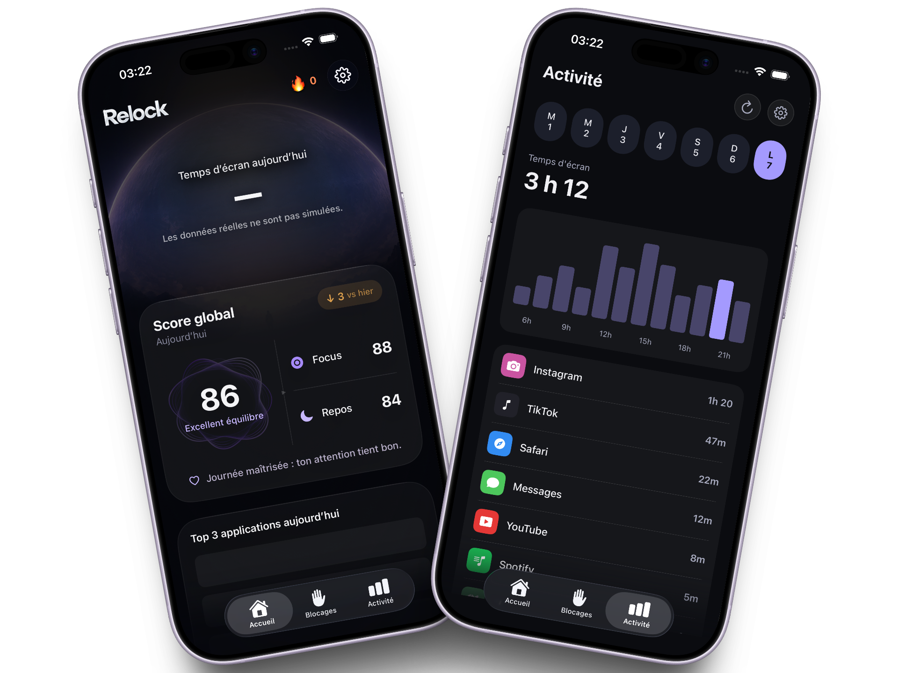
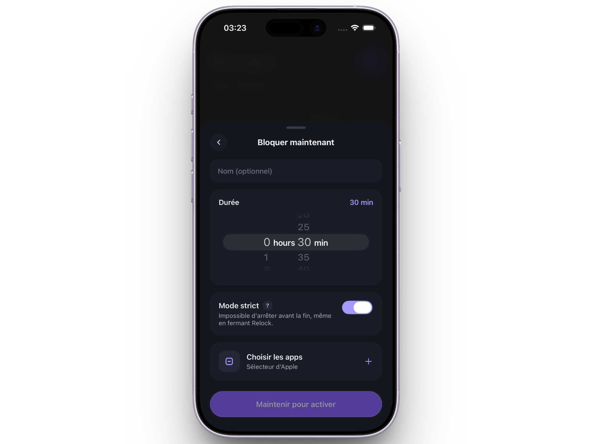
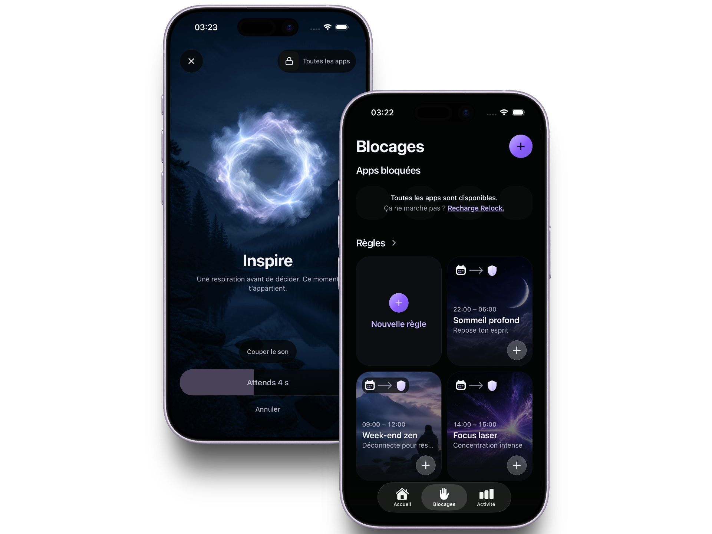

Before the day belongs to everyone else.
Keep the first part of your morning for your own thoughts, plans, and pace.
Your attention, back in your hands
Relock puts one intentional pause between you and the scroll. Build boundaries around the apps that pull you away, then return to the day you meant to have.
Built around Apple Screen Time controls. [CONFIRM PLATFORM AVAILABILITY]

Made for real life
Relock meets the reflex where it happens, without turning attention into another performance.
Keep the first part of your morning for your own thoughts, plans, and pace.
Protect the fragile stretch of attention that turns effort into meaningful progress.
Create a quieter ending to the day and make room for sleep before the next scroll begins.
What does Relock include?
Choose what needs protecting, decide when it matters, and let Relock hold the line with you.

Select apps and categories with Apple Family Controls. Your sensitive selection tokens stay in the iOS App Group used for enforcement.
Configure schedules, durations, limits, and rule modes for the moments that matter most.
Edit, suspend, resume, or reset your rules instead of forcing every day into the same plan.
Review aggregate interventions, estimated time saved, and streaks as information, not judgment.
Why choose Relock?
The best boundary is not the harshest one. It is the one that helps you remember what you wanted.
Turn an invisible reflex into a visible decision before the app takes over the next few minutes.
Choose your own apps, schedules, and level of friction rather than following a universal detox.
A focused interface and restrained feedback keep the experience useful without demanding more attention.
The pause is the feature
When a protected app is restricted, Relock creates a clear interruption. You get a moment to remember the reason behind the rule and decide what deserves your attention next.

The idea behind Relock
The point is not to win against your phone. It is to notice the moment, look up, and choose the life waiting on the other side of the screen.
Frequently asked questions
On supported Apple devices, you select apps or categories through Apple Family Controls and use those selections in your Relock rules.
The implemented blocking flow does not read messages, photos, page contents, or keystrokes from restricted apps. Apple provides opaque selection tokens that remain local for enforcement.
Your account and profile, rule configuration, onboarding answers, and aggregate activity statistics may be stored with Relock service providers. See the Privacy Policy for the exact scope.
Manage or cancel it through the store where you purchased it. Deleting Relock or your Relock account does not itself cancel a store subscription.
The app includes a limited JSON export and an account-deletion flow. Some provider-held data requires separate handling, as explained in the Privacy Policy.
Start with the app that steals five minutes. Build the pause that gives those minutes back.
Get Relock